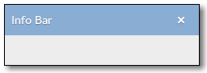

Gtk.InfoBar
Example
Methods
| Inherited: | Gtk.Box (14), Gtk.Container (27), Gtk.Widget (256), GObject.Object (33), Gtk.Buildable (10), Gtk.Orientable (2) |
|---|
| static | new() |
| add_action_widget(child, response_id) | |
| add_button(button_text, response_id) | |
| get_action_area() | |
| get_content_area() | |
| get_message_type() | |
| get_show_close_button() | |
| response(response_id) | |
| set_default_response(response_id) | |
| set_message_type(message_type) | |
| set_response_sensitive(response_id, setting) | |
| set_show_close_button(setting) |
Virtual Methods
| Inherited: | Gtk.Container (10), Gtk.Widget (82), GObject.Object (7), Gtk.Buildable (10) |
|---|
| do_close() | |
| do_response(response_id) |
Properties
| Inherited: | Gtk.Box (3), Gtk.Container (3), Gtk.Widget (38), Gtk.Orientable (1) |
|---|
| Name | Type | Flags | Short Description |
|---|---|---|---|
| message-type | Gtk.MessageType | r/w/c | The type of message |
| show-close-button | bool | r/w/c | Whether to include a standard close button |
Child Properties
| Inherited: | Gtk.Box (5) |
|---|
Style Properties
| Inherited: | Gtk.Widget (17) |
|---|
| Name | Type | Default | Flags | Short Description |
|---|---|---|---|---|
| action-area-border | int | 5 | r | Width of border around the action area |
| button-spacing | int | 6 | r | Spacing between buttons |
| content-area-border | int | 8 | r | Width of border around the content area |
| content-area-spacing | int | 16 | r | Spacing between elements of the area |
Signals
| Inherited: | Gtk.Container (4), Gtk.Widget (69), GObject.Object (1) |
|---|
| Name | Short Description |
|---|---|
| close | The ::close signal is a [keybinding signal][GtkBindingSignal] which gets emitted when the user uses a keybinding to dismiss the info bar. |
| response | Emitted when an action widget is clicked or the application programmer calls Gtk.Dialog.response (). |
Fields
| Inherited: | Gtk.Box (1), Gtk.Container (1), Gtk.Widget (1), GObject.InitiallyUnowned (3), GObject.Object (3) |
|---|
| Name | Type | Access | Description |
|---|---|---|---|
| parent | Gtk.Box | r |
Class Details
- class Gtk.InfoBar(homogeneous=False, spacing=0, **kwds)
Bases: Gtk.Box
Gtk.InfoBar is a widget that can be used to show messages to the user without showing a dialog. It is often temporarily shown at the top or bottom of a document. In contrast to Gtk.Dialog, which has a action area at the bottom, Gtk.InfoBar has an action area at the side.
The API of Gtk.InfoBar is very similar to Gtk.Dialog, allowing you to add buttons to the action area with Gtk.InfoBar.add_button () or Gtk.InfoBar.new_with_buttons (). The sensitivity of action widgets can be controlled with Gtk.InfoBar.set_response_sensitive (). To add widgets to the main content area of a Gtk.InfoBar, use Gtk.InfoBar.get_content_area () and add your widgets to the container.
Similar to Gtk.MessageDialog, the contents of a Gtk.InfoBar can by classified as error message, warning, informational message, etc, by using Gtk.InfoBar.set_message_type (). GTK+ may use the message type to determine how the message is displayed.
A simple example for using a Gtk.InfoBar:
<!-- language="C" --> // set up info bar GtkWidget *widget; GtkInfoBar *bar; widget = gtk_info_bar_new (); bar = GTK_INFO_BAR (bar); gtk_widget_set_no_show_all (widget, TRUE); message_label = gtk_label_new (""); gtk_widget_show (message_label); content_area = gtk_info_bar_get_content_area (bar); gtk_container_add (GTK_CONTAINER (content_area), message_label); gtk_info_bar_add_button (bar, _("_OK"), GTK_RESPONSE_OK); g_signal_connect (bar, "response", G_CALLBACK (gtk_widget_hide), NULL); gtk_grid_attach (GTK_GRID (grid), widget, 0, 2, 1, 1); ... // show an error message gtk_label_set_text (GTK_LABEL (message_label), message); gtk_info_bar_set_message_type (bar, GTK_MESSAGE_ERROR); gtk_widget_show (bar);
# Gtk.InfoBar as Gtk.Buildable
The Gtk.InfoBar implementation of the Gtk.Buildable interface exposes the content area and action area as internal children with the names “content_area” and “action_area”.
Gtk.InfoBar supports a custom element, which can contain multiple elements. The “response” attribute specifies a numeric response, and the content of the element is the id of widget (which should be a child of the dialogs action_area ).
- static new()
Returns: a new Gtk.InfoBar object Return type: Gtk.Widget Creates a new Gtk.InfoBar object.
New in version 2.18.
- add_action_widget(child, response_id)
Parameters: - child (Gtk.Widget) – an activatable widget
- response_id (int) – response ID for child
Add an activatable widget to the action area of a Gtk.InfoBar, connecting a signal handler that will emit the Gtk.InfoBar ::response signal on the message area when the widget is activated. The widget is appended to the end of the message areas action area.
New in version 2.18.
Parameters: Returns: the Gtk.Button widget that was added
Return type: Adds a button with the given text and sets things up so that clicking the button will emit the “response” signal with the given response_id. The button is appended to the end of the info bars’s action area. The button widget is returned, but usually you don’t need it.
New in version 2.18.
- get_action_area()
Returns: the action area Return type: Gtk.Widget Returns the action area of info_bar.
New in version 2.18.
- get_content_area()
Returns: the content area Return type: Gtk.Widget Returns the content area of info_bar.
New in version 2.18.
- get_message_type()
Returns: the message type of the message area. Return type: Gtk.MessageType Returns the message type of the message area.
New in version 2.18.
Returns: True if the widget displays standard close button Return type: bool Returns whether the widget will display a standard close button.
New in version 3.10.
- response(response_id)
Parameters: response_id (int) – a response ID Emits the “response” signal with the given response_id.
New in version 2.18.
- set_default_response(response_id)
Parameters: response_id (int) – a response ID Sets the last widget in the info bar’s action area with the given response_id as the default widget for the dialog. Pressing “Enter” normally activates the default widget.
Note that this function currently requires info_bar to be added to a widget hierarchy.
New in version 2.18.
- set_message_type(message_type)
Parameters: message_type (Gtk.MessageType) – a Gtk.MessageType Sets the message type of the message area. GTK+ uses this type to determine what color to use when drawing the message area.
New in version 2.18.
- set_response_sensitive(response_id, setting)
Parameters: Calls Gtk.Widget.set_sensitive (widget, setting) for each widget in the info bars’s action area with the given response_id. A convenient way to sensitize/desensitize dialog buttons.
New in version 2.18.
Parameters: setting (bool) – True to include a close button If true, a standard close button is shown. When clicked it emits the response Gtk.ResponseType.CLOSE.
New in version 3.10.
- do_close()
Type: virtual
- do_response(response_id)
Type: virtual Parameters: response_id (int) – a response ID Emits the “response” signal with the given response_id.
New in version 2.18.
Signal Details
- Gtk.InfoBar.signals.close(info_bar)
Signal Name: close Flags: ACTION, RUN_LAST Parameters: info_bar (Gtk.InfoBar) – The object which received the signal The ::close signal is a [keybinding signal][GtkBindingSignal] which gets emitted when the user uses a keybinding to dismiss the info bar.
The default binding for this signal is the Escape key.
New in version 2.18.
- Gtk.InfoBar.signals.response(info_bar, response_id)
Signal Name: response
Flags: Parameters: - info_bar (Gtk.InfoBar) – The object which received the signal
- response_id (int) – the response ID
Emitted when an action widget is clicked or the application programmer calls Gtk.Dialog.response (). The response_id depends on which action widget was clicked.
New in version 2.18.
Property Details
- Gtk.InfoBar.props.message_type
Name: message-type Type: Gtk.MessageType Default Value: Gtk.MessageType.INFO Flags: r/w/c The type of the message.
The type may be used to determine the appearance of the info bar.
New in version 2.18.